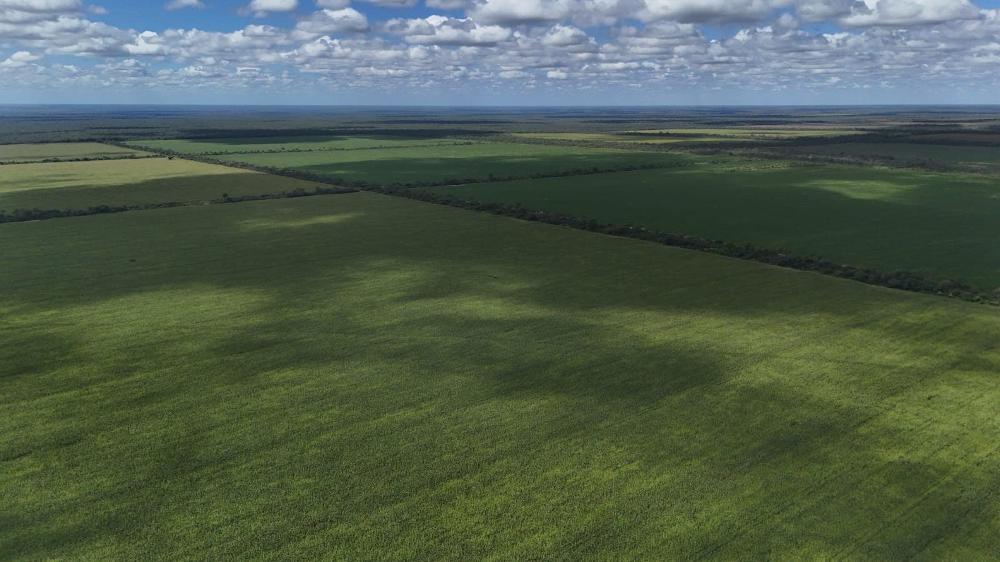
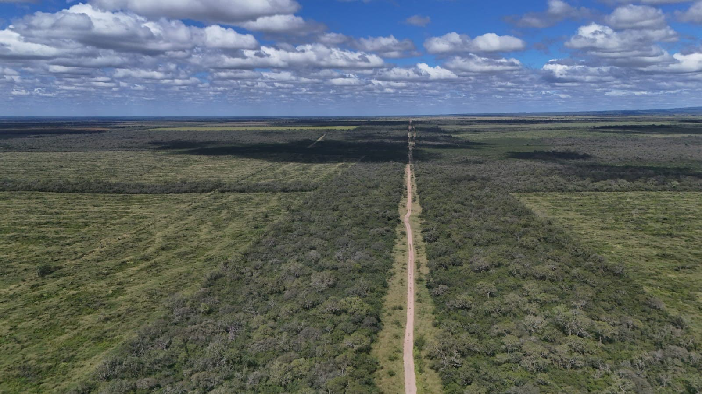
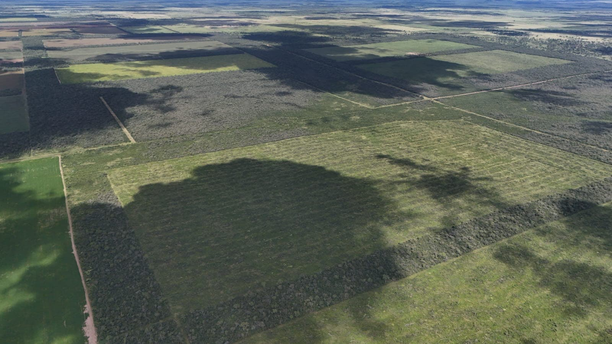
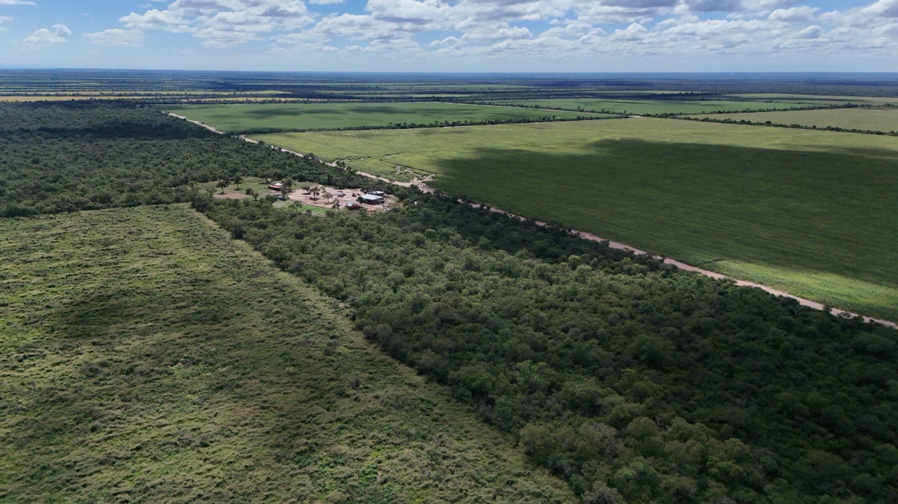
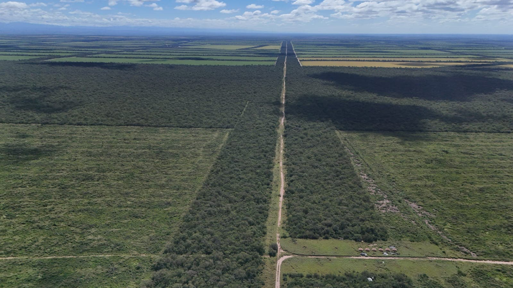
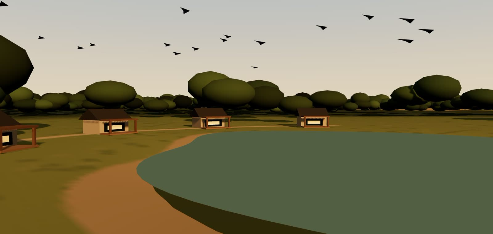

01 · Llegada
La Represa
Tierra que produce. Agua que da vida.
Un grupo dedicado a la producción rural, con una visión que integra agua, naturaleza y hospitalidad.
01 · Llegada
Tierra que produce. Agua que da vida.
Un grupo dedicado a la producción rural, con una visión que integra agua, naturaleza y hospitalidad.
02 · El agua
Proyectamos un espejo de agua en el punto del campo donde corre el agua: el pulmón del lugar y su identidad.
Proyectado · 3.500 m² · 2 m de profundidad media03 · Habitar
Una casa principal, un quincho y módulos para huéspedes, con galerías que miran al agua.
Proyecto en desarrollo04 · La experiencia
Estadías tranquilas frente al agua, con pesca deportiva y caza de torcazas como experiencias que estamos evaluando.
05 · El grupo
Alrededor del agua, un campo de aproximadamente 2.200 hectáreas que es la base de nuestra producción rural.
Visualización conceptual del proyecto
El grupo
La Represa es un grupo dedicado a la producción rural sobre un campo de aproximadamente 2.200 hectáreas. Tierras en producción y monte, con el agua como identidad.




Actividades
El centro del grupo: las tierras productivas del campo.

02Maderas duras del monte.
Carbón vegetal producido en el campo.
Alcance comercial a confirmarExperiencias junto al agua · Proyecto en desarrollo
Una propuesta de hospitalidad rural pensada para pocos huéspedes, que estamos desarrollando junto a la represa.

Una casa principal, un quincho y tres o cuatro módulos para huéspedes, todos con vista al agua.
Pacú y dorado en la represa, sujeto a evaluación del agua y de las especies.
Una experiencia sujeta a viabilidad y habilitación local.
Contacto
Si te interesa conocer La Represa, su producción o el proyecto junto al agua, escribinos.